继上次写了《51单片机使用I2C总线》之后，今天又研究了一下SPI总线，并封装成51的函数库，以方便以后使用（近期打算使用NRF2401）。
SPI总线的思想其实和I2C类似，也分为数据线和时钟线，只不过SPI的数据线有两根，一根叫做MOSI（Master Output Slave Input，主机输出从机输入）和MISO（Master Input Slave Output，主机输入从机输出），可以全双工传输。时钟线叫做SCL（或者SCK或SCLK）。在SCL的驱动下，MOSI与MISO一位一位地传送数据，直到传完8个位。
====================阶段一：理解“交换”===================
SPI传输数据的特征，用一个词概括，就是“交换”。在一个SPI的传输过程中，不存在严格意义上的发送方与接收方。当SCL从无效变为有效的时候，主机和从机相互读取对方发送的位。
以模式1（SPI的四种模式将在下文讲解）的SPI为例，其传输规则为：
（1）当空闲时，SCL为低电平；
（2）当SCL从低电平变为高电平时，主机和从机分别准备好要发送的位（主机将MOSI置为要发送的位，从机将MISO置为要发送的位）；
（3）当SCL从高电平变为低电平时，主机和从机分别读取对方发送的位（主机读取MISO的值，从机读取MOSI的值）。
（4）传完8个位后，传输结束。
假设主机想要给从机发送10101010，从机想给主机发送01010101，那么过程如下动图（在此感谢oldbeginner的帖子《PROTEUS仿真学习笔记05》）：
首先，双方准备好数据（主机的数据高位在左，从机的数据高位在右），此时SCL为低电平：

接着，SCL从低电平变为高电平，这时主机把MOSI置为1，从机把MISO置为0；再接下来，SCL从高电平变为低电平，这时主机读取MISO，从机读取MOSI，于是完成了最高位的交换：
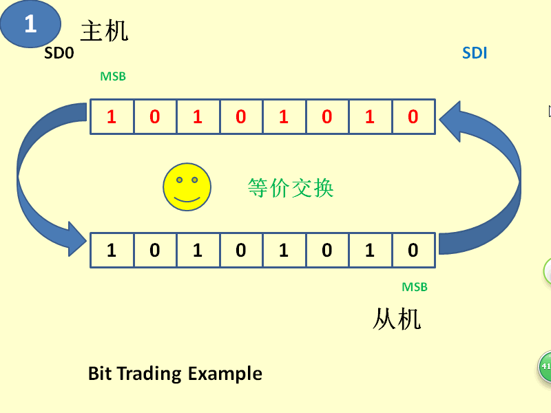
如此，继续交换次高位：
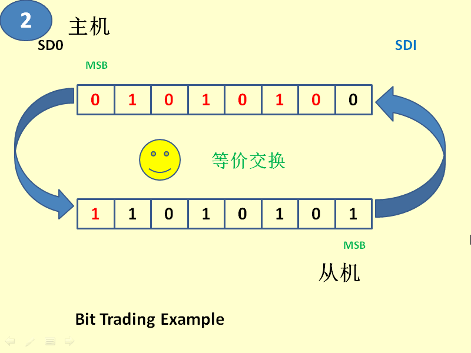
以此类推，直到8个位都交换完。
====================阶段二：SPI的四种模式====================
相比于I2C，SPI多了一个“模式”的概念。SPI可以有两种极性（CPOL）和两种相位（CPHA），所以组合起来就是四种可能。所谓极性，就是指SCL空闲时的电平。所谓相位，就是指电平采样的时机。采样的时机分为Idel to Active和Active to Idel两种，分别用0和1表示。Idel to Active是指在SCL从空闲变为有效时采样，Active to Idel是指在SCL从有效变为空闲时采样。
上述例子中，SCL空闲时为0，有数据时为1，所以CPOL=0。采样时机在下降沿，也就是SCL从Active变为Idel时采样，所以CPHA=1。因此Mode=01B=1。
| Mode | CPOL | CPHA |
|---|---|---|
| 0 | 0 | 0 |
| 1 | 0 | 1 |
| 2 | 1 | 0 |
| 3 | 1 | 1 |
更直观一些就是如图：
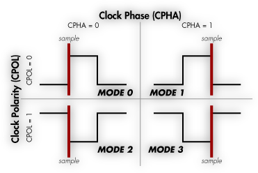
仔细思考会发现，模式0和模式2有些怪异。假设现在主机向发送一个字节，当主机毫无征兆地把SCL从Idel变为Active时，从机可能根本来不及准备数据放到MISO上，就被主机读取了。而在模式1和模式3中就不存在这种问题，因为当主机把SCL从Idel变为Active时，相当于通知从机要准备数据了，此时从机可以把数据放上MISO，即使有点延迟也无关紧要，只要在Active to Idel发生前放好数据就可。
因此，大多数设备会选择模式1与模式3。当然，模式0与模式2也有存在的意义。因为很多设备的操作都是读写寄存器。不论是读数据还是读取写入的返回值，都不会是交换的第一个字节，于是从设备有足够的时间做准备。
======================阶段三：代码实现===================
下面的代码是51单片机用通用IO口模拟SPI时序，实现对SPI设备读写的函数库。
types.h
#ifndef TYPES_H #define TYPES_H typedef char bool; typedef char int8; typedef unsigned char uint8; typedef int int16; typedef unsigned int uint16; typedef long int32; typedef unsigned long uint32; #define true 1 #define false 0 #define null 0 #endif
spi.h
/* 本文件实现了51单片机模拟spi的函数库： 设定spi的极性与相位 void spi_mode(uint8 p_cpol,uint8 p_cpha); 用spi协议交换一个字节 uint8 spi_swap(uint8 p_data); 如需修改spi的SCL、MOSI、MISO引脚以及延迟，请到spi.c中修改 */ #ifndef SPI_H #define SPI_H #include "types.h" void spi_mode(uint8 p_cpol,uint8 p_cpha); uint8 spi_swap(uint8 p_data); #endif
spi.c
/*
本文件实现了spi.h中定义的函数
如需修改SCL、MOSI和MISO引脚，请修改SPI_SCLK、SPI_MOSI和SPI_MISO三个宏
如需修改延迟，请修改SPI_DELAY
*/
#define SPI_SCLK P3^4
#define SPI_MOSI P3^2
#define SPI_MISO P3^3
#define SPI_DELAY 10
#include "spi.h"
#include "reg51.h"
sbit SCLK=SPI_SCLK;
sbit MOSI=SPI_MOSI;
sbit MISO=SPI_MISO;
static uint8 sg_mode;
#define CPOL (sg_mode&0x02)
#define CPHA (sg_mode&0x01)
#if(SPI_DELAY==0)
#define spi_delay(x)
#else
static void spi_delay(uint8 p_loop)
{
while(p_loop--);
}
#endif
void spi_mode(uint8 p_cpol,uint8 p_cpha)
{
sg_mode=((p_cpol&0x01)<<1)|(p_cpha&0x01);
SCLK=CPOL;
spi_delay(SPI_DELAY);
}
uint8 spi_swap(uint8 p_data)
{
uint8 t_i;
if(CPHA)
{
for(t_i=0;t_i<8;t_i++)
{
SCLK=!CPOL;
spi_delay(SPI_DELAY);
MOSI=p_data&0x80;
p_data<<=1;
SCLK=CPOL;
spi_delay(SPI_DELAY);
p_data|=MISO;
}
}
else
{
for(t_i=0;t_i<8;t_i++)
{
MOSI=p_data&0x80;
p_data<<=1;
SCLK=!CPOL;
spi_delay(SPI_DELAY);
p_data|=MISO;
SCLK=CPOL;
spi_delay(SPI_DELAY);
}
}
return p_data;
}
=========================阶段四：实验========================
为了方便实验，可以直接用proteus中的SPI DEBUGGER。
测试代码如下：
main.c
#include "spi.h"
#include "reg51.h"
void delay(uint16 p_ms)
{
uint8 t_timer;
while(p_ms--)
for(t_timer=0;t_timer<250;t_timer++);
}
sbit CS=P3^5;
void main()
{
CS=1;
spi_mode(1,1);
CS=0;
while(1)
{
P1=spi_swap(0xa5);
delay(1000);
}
}
其中CS是SPI DEBUGGER的片选，低电平有效。
搭建电路如下：
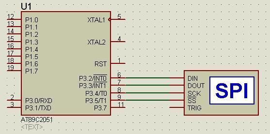
注意其中SPI DEBUGGER在原本默认设置上修改如下三项设置：
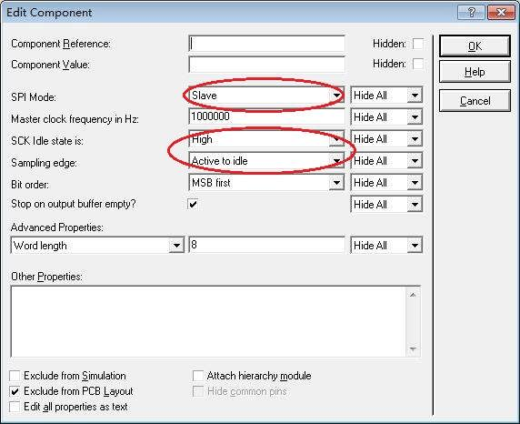
即把SPI DEBUGGER设置为从设备（Slave），SCK Idle state就是SCL空闲时的电平，也就是CPOL，查看代码可知，是1，也就是High。而代码中，CPHA是1，也就是在Active to idle时采样。
开始仿真的按钮请点击第二个“step”，而不是第一个“play”：
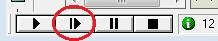
开始后，弹出SPI DEBUGGER的调试窗口：
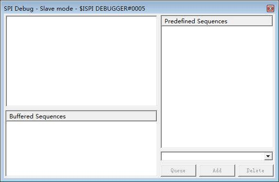
在右下角的输入框中输入“1”，然后点击按钮“queue”：
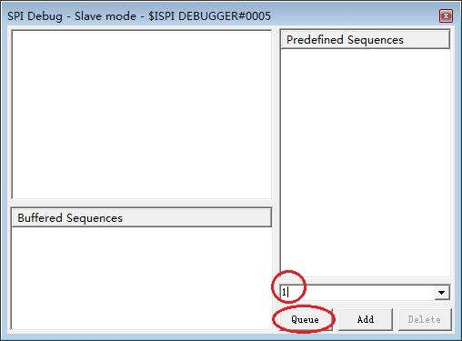
类似地，不断输入”2″、“3”……直到Buffered Sequences中有足够的待发送数据为止：
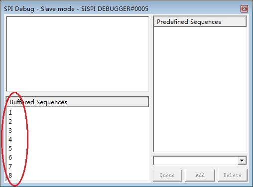
这时，就可以点击”play”按钮啦：
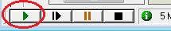
于是可以看到，调试窗口里不断实现收到0xa5，发出去0x01、0x02、0x03……同时P1口输出的数值就是单片机收到的数据，因此也会1、2、3、4……地变化：
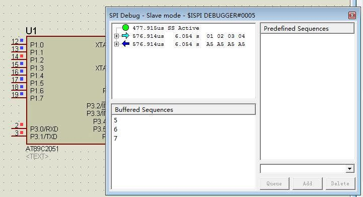